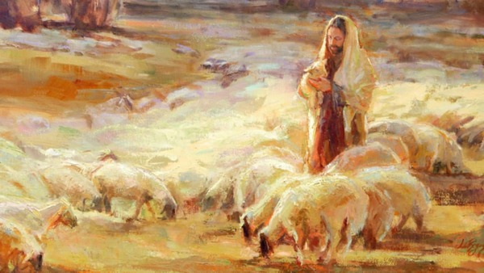

Place 5 - 2025 General Conference theme picture
This is the October 2025 General Conference theme picture shows Jesus Christ as the Good Shepherd with sheep around Him. It reminds members that Jesus guides, protects, and cares for all His followers. This image is often used to teach about faith, love, and following Christ.
